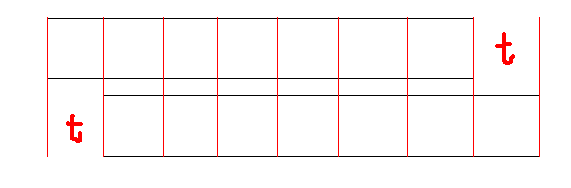

理解一下题意，然后玩几组样例就能发现，实际上就是\(k\)个\(i\)等价于\(1\)个\(i-1\)。所以就类似于\(k\)进制进行进位，如果最后\(0\)位上不是\(0\)，那么就存在划分方案。否则就不存在划分方案。
输出第一次划分方案就记录一下每个数字是不是后面的数字凑出来的。如果是的话就像后面数字连边。这样就形成了一棵\(k\)叉树。最后\(dfs\)一遍输出即可。
考场上\(vector\)下标从1开始记录了。就\(wa\)惨了。。。
/*
* @Author: wxyww
* @Date: 2019-08-04 11:41:21
* @Last Modified time: 2019-08-04 16:08:45
*/
#include<cstdio>
#include<iostream>
#include<cstdlib>
#include<cmath>
#include<ctime>
#include<bitset>
#include<cstring>
#include<algorithm>
#include<string>
#include<queue>
#include<vector>
using namespace std;
typedef long long ll;
const int N = 200000 + 100;
ll read() {
ll x=0,f=1;char c=getchar();
while(c<'0'||c>'9') {
if(c=='-') f=-1;
c=getchar();
}
while(c>='0'&&c<='9') {
x=x*10+c-'0';
c=getchar();
}
return x*f;
}
int vis[N],tot;
int n,K;
vector<int>e[N * 10],ans[N];
void print(int pos,int u) {
if(u <= n) {
ans[pos].push_back(u);vis[u] = 1;return;
}
int k = e[u].size();
for(int i = 0;i < k;++i) {
print(pos,e[u][i]);
}
}
int main() {
int T = read();
while(T--) {
n = read(),K = read();
tot = n;
for(int i = 1;i <= n;++i) e[read()].push_back(i);
for(int i = n;i > 1;--i) {
int k = e[i].size();
while(k >= K) {
++tot;
for(int j = 1;j <= K;++j,k--) {
e[tot].push_back(e[i][k - 1]);
}
e[i - 1].push_back(tot);
}
}
if(e[1].size() < K) {
puts("0");
for(int i = 0;i <= tot;++i) e[i].clear();
for(int i = 0;i <= K;++i) ans[i].clear();
memset(vis,0,sizeof(vis));
continue;
}
puts("1");
for(int i = 0;i < K;++i) {
int k = e[1][i];
print(i + 1,k);
}
for(int i = 1;i <= n;++i) if(!vis[i]) ans[1].push_back(i);
for(int i = 1;i <= K;++i) {
int k = ans[i].size();
printf("%d ",k);
for(int j = 0;j < k;++j) printf("%d ",ans[i][j]);
puts("");
}
for(int i = 0;i <= tot;++i) e[i].clear();
for(int i = 0;i <= K;++i) ans[i].clear();
memset(vis,0,sizeof(vis));
}
return 0;
}考场上只会一个暴力并查集的做法。就是每次暴力将相同的位置并起来，最后查询。然鹅，，，，没注意到"后面一个区间不能相交"这个重要条件。。。然后就硬生生把复杂度对的42分程序通过数据分治改成了22分的好成绩233.。。
只要将并查集改成暴力这题就能A了。。。
对于已经给出的每一位，都根据给出的相等条件不断向前跳，将这个字符储存在第一个可知的位置。对于后面的询问，用同样的方法向前跳即可。
考虑一下向前跳的复杂度。

如图，我们已知两个黑色矩形区域是相等的。那么显然这两个区域都含有一个长度为t的循环节。我们如果暴力跳的话就要跳\(\frac{len}{t}\)次。所以我们直接计算出最前面那个循环节中与当前查询字符相等的位置，直接跳过去即可。
这样每个条件都只会最多跳一次。所以复杂度就是\(O(m)\)的。
/*
* @Author: wxyww
* @Date: 2019-08-04 19:52:20
* @Last Modified time: 2019-08-04 20:16:31
*/
#include<cstdio>
#include<iostream>
#include<cstdlib>
#include<cmath>
#include<ctime>
#include<bitset>
#include<cstring>
#include<algorithm>
#include<string>
#include<queue>
#include<vector>
#include<map>
using namespace std;
typedef long long ll;
const int N = 1000100;
ll read() {
ll x=0,f=1;char c=getchar();
while(c<'0'||c>'9') {
if(c=='-') f=-1;
c=getchar();
}
while(c>='0'&&c<='9') {
x=x*10+c-'0';
c=getchar();
}
return x*f;
}
int n,m1,m2,Q;
struct node {
int l1,r1,l2,r2;
}a[N];
pair<int,char> b[N];
bool cmp(const node &A,const node &B) {
return A.l2 < B.l2;
}
map<int,char>ans;
int erfen(int x) {
int ret = 0,l = 1,r = m2;
while(l <= r) {
int mid = (l + r) >> 1;
if(x <= a[mid].r2) ret = mid,r = mid - 1;
else l = mid + 1;
}
return ret;
}
int find(int x) {
while(1) {
int p = erfen(x);
if(a[p].l2 > x || a[p].r2 < x) return x;
int tmp = a[p].l2 - a[p].l1;
x = x - (x - a[p].l2) / tmp * tmp;
while(x >= a[p].l2) x -= tmp;
}
}
int main() {
n = read(),m1 = read(),m2 = read(),Q = read();
for(int i = 1;i <= m1;++i) {
int x = read();char c;
scanf("%c",&c);
b[i] = make_pair(x,c);
}
for(int i = 1;i <= m2;++i) {
a[i].l1 = read();a[i].r1 = read();a[i].l2 = read();a[i].r2 = read();
}
sort(a + 1,a + m2 + 1,cmp);
for(int i = 1;i <= m1;++i) ans[find(b[i].first)] = b[i].second;
while(Q--) {
int x = find(read());
if(!ans.count(x)) puts("?");
else putchar(ans[x]),puts("");;
}
return 0;
}先考虑一下无解的情况。
1.m为奇数肯定无解。这个很显然，每条路径长度都要是偶数，每条边都要走恰好一遍。显然边数为偶数
2.如果存在某个点的度数为偶数，肯定无解。考虑一个点肯定要作为恰好一条路径的端点，在这条路径中这个点被走了奇数次。而其他的每条路径这个点肯定都被走了偶数次。所以这个点的度数肯定为奇数。
然后先不考虑路径长度为偶数的问题。那么只要建一个虚点，向所有点连一条虚边，这个每个点的度数都是偶数。跑一边欧拉回路，删掉虚点和虚边。就得到了一个答案。
然后考虑如何处理长度为偶数的限制。如果我们把边两两配对建一个新图(因为边数为偶数，所以一定可以做到)，再按照上面的方法跑。最后把边拆回成原来的边即可。
然后考虑如何将边配对。先建立一棵\(dfs\)树,先让子树处理完子树内部的边。子树可能无法恰好配对，当前可以处理的边就有子树内没能处理掉的边、与当前点相连的非树边、与父亲相连的边。尽量进行配对，如果无法完全配对就将剩下的那条边(必须是与父亲相连的那条)传回给父亲处理。
//@Author: wxyww
#include<cstdio>
#include<iostream>
#include<cstdlib>
#include<cstring>
#include<algorithm>
#include<queue>
#include<vector>
#include<ctime>
#include<cmath>
#include<map>
#include<string>
using namespace std;
typedef long long ll;
const int N = 2000000 + 10;
ll read() {
ll x = 0,f = 1; char c = getchar();
while(c < '0' || c > '9') {if(c == '-') f = -1;c = getchar();}
while(c >= '0' && c <= '9') {x = x * 10 + c - '0',c = getchar();}
return x * f;
}
int du[N];
struct node {
int u,v,nxt,id,id2;
}e[N];
struct NODE {
int u,v,id1,id2;
};
queue<NODE>q;
int head[N],ejs = 1;
void add(int u,int v,int id,int id2) {
e[++ejs].v = v;e[ejs].u = u;e[ejs].nxt = head[u];head[u] = ejs;e[ejs].id = id;e[ejs].id2 = id2;
}
int viss[N],n,m,vis[N],dep[N];
int dfs(int u,int fa) {
int now = 0;
vis[u] = 1;
for(int i = head[u];i;i = e[i].nxt) {
if((i ^ 1) == fa) continue;
int v = e[i].v;
if(!vis[v]) {
dep[v] = dep[u] + 1;
int k = dfs(v,i);
if(!k) { viss[e[i].id] = 1;continue;}
if(now) {
q.push((NODE){e[k].v,e[now].v,e[k].id,e[now].id});
now = 0;
}
else now = k;
}
else {
if(dep[v] < dep[u]) continue;
if(viss[e[i].id]) continue;
if(now) {
q.push((NODE){e[i].v,e[now].v,e[i].id,e[now].id});
now = 0;
}
else now = i;
}
viss[e[i].id] = 1;
}
if(now) {
q.push((NODE){e[fa ^ 1].v,e[now].v,e[fa].id,e[now].id});
return 0;
}
return fa;
}
int vise[N],top,ans[N];
void Eur(int u) {
for(int &i = head[u];i;i = e[i].nxt) {
if(vise[i >> 1]) continue;
vise[i >> 1] = 1;
int v = e[i].v;
int tmp = i;
Eur(v);
ans[++top] = e[tmp].id2;ans[++top] = e[tmp].id;
}
}
int main() {
n = read(),m = read();
if(m & 1) return puts("0"),0;
for(int i = 1;i <= m;++i) {
int u = read(),v = read();
du[u]++;du[v]++;
add(u,v,i,0);add(v,u,i,0);
}
for(int i = 1;i <= n;++i) if(!(du[i] & 1)) return puts("0"),0;
puts("1");
dep[1] = 1;
dfs(1,0);
ejs = 1;memset(head,0,sizeof(head));
while(!q.empty()) {
NODE k = q.front();q.pop();
add(k.u,k.v,k.id1,k.id2);
add(k.v,k.u,k.id2,k.id1);
}
for(int i = 1;i <= n;++i) add(n + 1,i,-1,-1),add(i,n + 1,-1,-1);
Eur(n + 1);
for(int l = 1,r;l <= top;l = r + 1) {
while(ans[l] == -1 && l <= top) ++l;
if(l > top) break;
r = l + 1;
while(ans[r] != -1 && r <= top) ++r;
printf("%d ",r - l);
for(int i = l;i <= r - 1;++i) printf("%d ",ans[i]);
puts("");
}
return 0;
}一定要造大数据测试程序。
注意细节。
认真读题，get到全部条件。
期望得分:100+42+0=142
实际得分:7+22+0=29
呜呜呜~